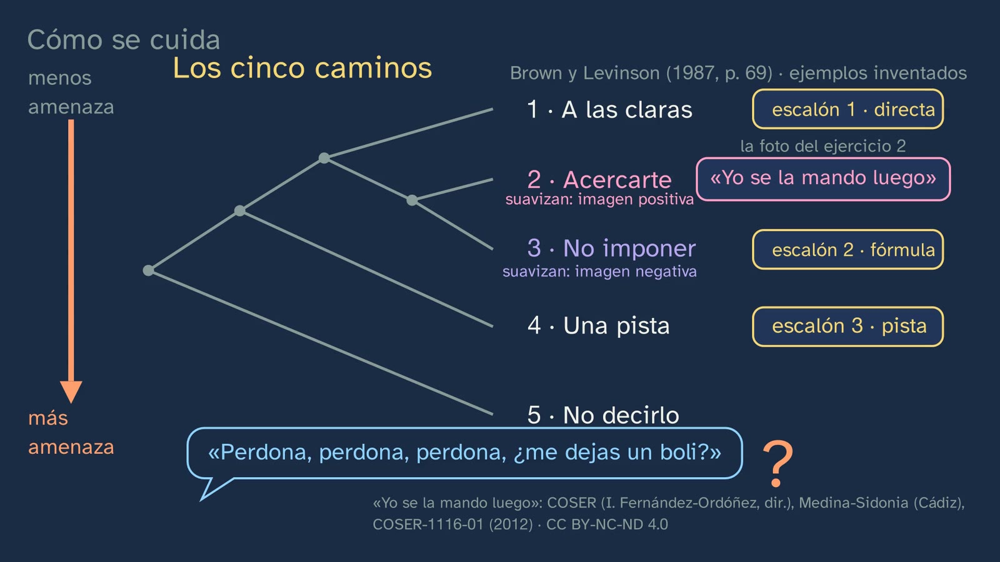
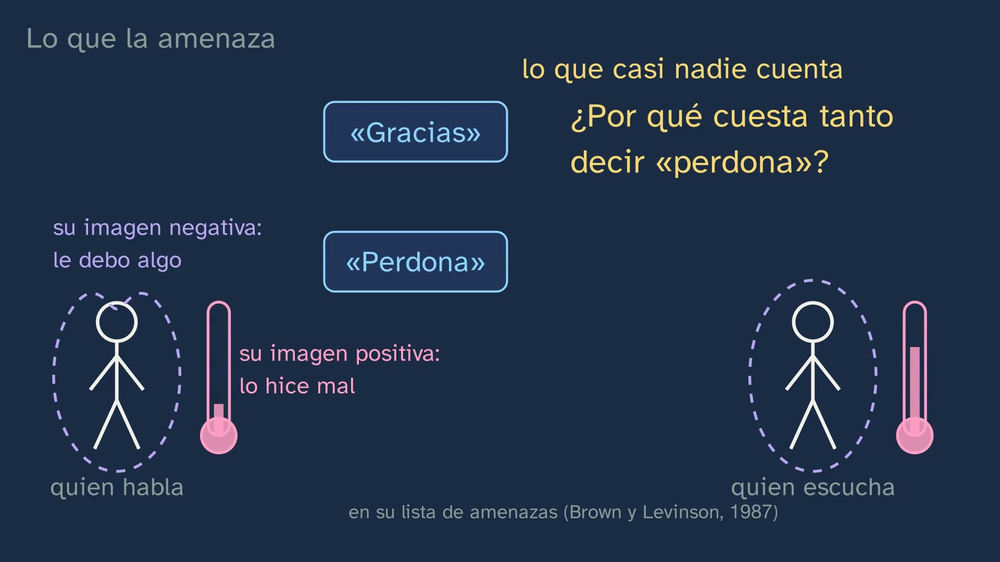
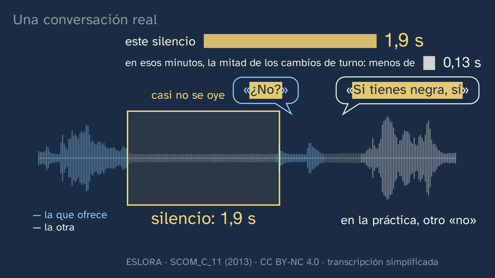
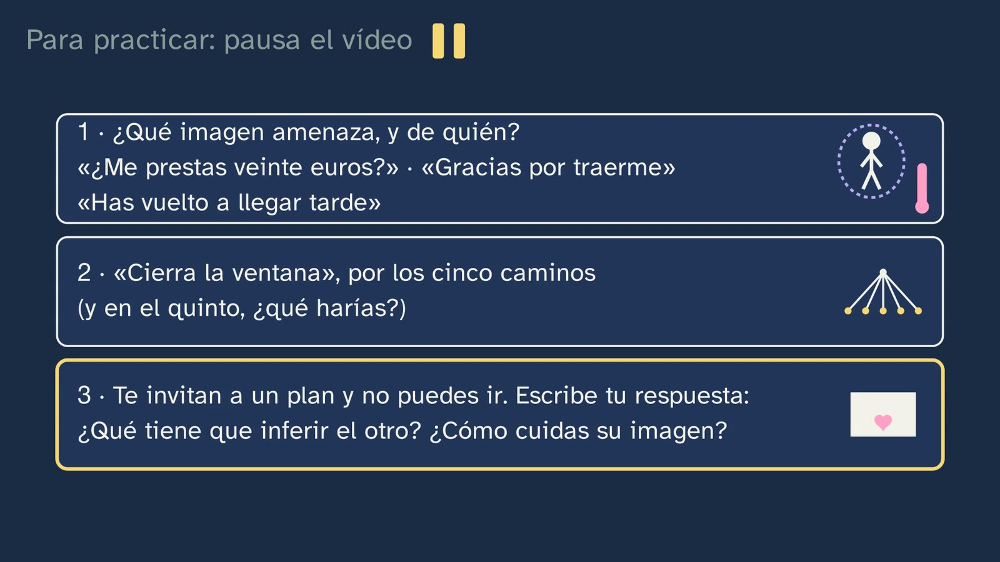

Looking after the other's face: politeness
In a nutshell
The class that answers the question the lab left open: why do we wrap up what we ask for? It starts from something that happens every day. You're invited to a birthday party: to say yes, one word is enough; to say no, we use eleven («Uf… es que el sábado no puedo. ¡Qué pena! Pásalo genial», "Ugh… it's just that I can't on Saturday. What a shame! Have a great time"). Why? The answer has a name, face (in Spanish, la imagen, "the image"): the idea of oneself that each person wants others to recognise (Brown and Levinson, 1987, p. 61). The route, in six stages:
- What we look after. The word and its history (English lose face, a calque of the Chinese 丟臉 in the 19th century; Goffman, 1955) and its two sides: negative face, not being imposed on, and positive face, being appreciated. "Negative" does not mean "bad": it comes from the rites of avoidance.
- What threatens it. Asking, criticising, saying no. And what hardly anyone tells you: thanking and apologising threaten the speaker's own face (pp. 67–68), with a real case from COSER: a woman is told "sorry", and she answers that there is nothing to forgive.
- How it is looked after. Brown and Levinson's five paths (p. 69), with class 3's three steps inside them, and the softeners, of two kinds, those that don't impose and those that bring people closer, with real requests from girls aged 19 and 18 (ESLORA). And the answer to class 3: we wrap up what we ask for because asking threatens the other person's face.
- The "no" comes late. About two tenths of a second pass between turns; preparing a single word takes six: we prepare our answer while the other person is still talking, and that is why a silence is noticed. "No"s come, on average, later than "yes"es (Stivers et al., 2009: ten languages, Spanish not among them). And a real conversation in Spanish, with its silence measured: 1.9 seconds (the video shows its waveform, without the voices).
- Building it up. Politeness doesn't only put out fires: it also flatters (Kerbrat-Orecchioni, 1996). The offer that is turned down and pressed again, like a dance, in a village in Huesca and in a flat in Galicia.
- The same in every language? The typical mistake, taken apart with a survey in Jaén and in Coventry; Diana Bravo's proposal (autonomy and affiliation) and confianza, closeness and trust: being close enough to speak frankly (Hernández Flores); and the debate, universal or cultural, with the best argument for each position and no verdict.
What it adds that the textbooks don't. In our comparison with sixteen first-year Bachillerato textbook series, reviewed on 29 and 30/09/2026 for comparison only, politeness as a principle appears in only one (Akal) and Brown and Levinson appear in none. On YouTube, the most-watched videos present their model as a universal recipe book of "only four" strategies; in Spanish there is nothing with any views for Bachillerato (the class's review of reference videos, 23/10/2026). Nobody draws the two turn-taking figures together, the 200 and the 600 milliseconds; nobody explains why thanking threatens your own face; nobody measures a real silence in Spanish, or tells you that in Spanish an offer is pressed, or names autonomy and affiliation. This class does it with real, open data that can be used in the classroom tomorrow, and with the honesty of saying what is measured, what is a proposal and what is debated.
Objective. By the end, students will be able to explain politeness as looking after one's own face and other people's, recognise the strategies that soften what threatens it or that build it up, recognise why a "no" tends to come later and wrapped up, and explain why what counts as polite changes from one language to another, with Spanish and English.
For readers outside Spain: the Bachillerato is the last two years of secondary school (ages 16–18), and ESO is the compulsory stage before it (ages 12–16). Spanish Language and Literature I is a core subject, taken by every student in the first year. The video is in Spanish, with English subtitles; the images on this sheet come from the video and keep their Spanish text. In Spain the decimal separator is a comma: the board writes 1,9 s for 1.9 s. Spanish calls face imagen, so the board writes «imagen negativa» and «imagen positiva» for negative and positive face. Brown and Levinson's own names for the five paths are bald on record, positive politeness, negative politeness, off record and don't do the FTA (face-threatening act); the class calls them saying it plainly, getting closer, not imposing, a hint and not saying it. The class is about Spanish, so the examples stay in Spanish here, with an English gloss; the real fragments from the ESLORA and COSER corpora are quoted word for word, and the English glosses are ours. Spanish has two ways of saying "you": tú, informal, and usted, formal. Jaén is a city in Andalusia, in the south of Spain; Galicia, where ESLORA was recorded, is in the north-west. Sources written in English (Brown and Levinson, Goffman, Stivers, Levinson, Kendrick and Torreira, Wierzbicka…) are quoted in their original words; the decree and the Spanish and French sources, in our translation. The BOE is Spain's Official State Gazette, where every law and decree is published, and the DLE is the dictionary of the Spanish Royal Academy (RAE).
Curriculum
Spain's Royal Decree 243/2022, Spanish Language and Literature I, a core subject in the first year of Bachillerato (consolidated text in the BOE, checked for the topic on 29 and 30/09/2026: its latest update, of 02/07/2026, only touches article 23.4, not the Language annex). Our translation of the official Spanish text.
| Element | What the decree says | Where the class works on it |
|---|---|---|
| Core knowledge (block B, "Communication", 1. Context) | "Components of the communicative event: degree of formality of the situation and its public or private nature; social distance between the interlocutors; communicative purposes and interpretation of intentions; channel of communication and non-verbal elements of communication." | "Social distance": the teacher against the classmate (2:13) and confianza, which in Jaén explained the preference for the kind insistence (15:11). "Interpretation of intentions": the girl making the offer reads a silence as a no (11:00), the hint about the party from class 1 (11:28) and exercise 3 |
| Core knowledge (block B, 3. Processes) | "Formal oral and written interaction. Taking and giving the floor. Conversational cooperation and linguistic politeness." | "Linguistic politeness", the whole class. "Taking and giving the floor", the chapter on turns (8:57–11:46): how long it takes to take the floor and what that time says. Taking and giving the floor in a formal debate, in topic 11 |
| Core knowledge (block D, "Reflection on language") | "Drawing one's own conclusions about how the linguistic system works, with a specific metalanguage, from the observation, comparison and classification of communicative units and from the contrast between languages […]" | The metalanguage (negative and positive face, face-threatening act, the five paths, autonomy and affiliation), classifying sentences (4:44; exercises 1 and 2) and the contrast between languages: English face, a calque of the Chinese (3:39), the ten languages of the turn-taking study (9:22) and Jaén against Coventry (14:00) |
| Specific competence 3 | "To produce oral and multimodal texts, with preferential attention to academic texts, with rigour, fluency, coherence, cohesion and the appropriate register, following the conventions of the different discourse genres, and to take part in oral interactions with a cooperative and respectful attitude, both to build knowledge and establish personal bonds and to intervene actively and in an informed way in different social contexts." | Its description says that "adapting oral uses to the communicative purpose and gauging their effects on the interlocutor is essential for effective communication, based on respect and mutual care". The class gives that mutual care a name: the other person's face and one's own, and how a "no" is gauged |
| Specific competence 9 | "To consolidate and deepen explicit and systematic knowledge of the structure of the language and its uses, and to reflect autonomously on linguistic and discursive choices, with the appropriate terminology, in order to develop linguistic awareness, to increase the communicative repertoire and to improve skills both in oral and written production and in comprehension and critical interpretation." | Its description asks for work "integrating the morphosyntactic, semantic and pragmatic levels". Here, pragmatics together with form: the imperative and the formula, the diminutive («un vasito», "a little glass"), in-group markers («tío», "dude", "mate") and what is minimised («un momento», "just a moment") |
| Criterion 3.2 | "To take part actively and appropriately in oral interactions (formal and informal) and in teamwork with attitudes of active listening and strategies of conversational cooperation and linguistic politeness." | In the video, only as analysis: students observe politeness strategies, but do not interact. To work on it properly, this sheet's activity (version A) has students inviting and turning down invitations aloud, in teams |
| Criterion 9.2 | "To explain and argue the interrelation between the communicative purpose and the linguistic choices of the sender, as well as their effects on the receiver, using explicit knowledge of the language and a specific metalanguage." | Which face each sentence threatens (4:44 and exercise 1), the five paths of one and the same request (exercise 2), the wrapped-up "no" and what the other person has to infer (exercise 3), and the effect of overdoing it (the pen with three «perdona», "sorry", 7:40) |
What students bring. From class 1, implicature: Saturday's party («Tengo examen el lunes», "I've got an exam on Monday"), which comes back today as one of the paths of politeness. From class 2, direct and indirect speech acts. From class 3, the three steps (direct, formula, hint), the softeners, Brown and Levinson's three weights (distance, power and what is asked for) and the contrast in imperatives between Spanish and British speakers (9.3% against 1.6%; Díaz Pérez, 2005). From lower secondary (ESO), the same core knowledge in years 3 and 4: "Informal and formal oral and written interaction: conversational cooperation and linguistic politeness" and the "Identification and use of the variations of deictic forms (formulas of familiarity and politeness) in relation to communicative situations" (Royal Decree 217/2022, Spanish Language and Literature, block B of years 3 and 4).
Where it comes back. Class 5, "Tú, usted and register", deals with forms of address, which only peep through here (in the same Conxo interview the class uses, the interviewer corrects themselves: «[…] a ti es com-, oh, perdón, a usted […]», "[…] for you [tú] it's li-, oh, sorry, for you [usted] […]"; COSER-2408-01, p. 14). Class 7 is the topic's second lab. Taking and giving the floor in a formal debate, in topic 11.
How the class is built
Video chapters
About nineteen minutes, in twelve chapters. It is a theory class, with Vera, without a lab coat, at her desk, but its data are real: three fragments from COSER (interviews in villages) and five from ESLORA (conversations and interviews from Galicia), one with its silence measured on its waveform; their voices are not played, because they could be recognised. The board has two figures that come back throughout the class with the same meaning: the dashed bubble (negative face, each person's space) and the thermometer with a heart (positive face, being appreciated). What threatens arrives as a dart, and what turns back on the speaker, as a boomerang.
| Chapter (minute) | What it does | Learning principle |
|---|---|---|
| What we'll see (0:00) | Vera says hello; the map of the topic, with the fourth class highlighted; today, why we wrap up what we ask for | Knowing where you are (multimedia learning: signalling) |
| What you already know (0:19) | What three things weigh in a request? A pause with a countdown; the weights drop onto the scales and a «?» is left: what we look after | Retrieval (Roediger and Karpicke, 2006), with an example from the subject itself |
| Solutions (0:52) | Class 3's three exercises, each with its question; «Yo se la mando luego» ("I'll send it to you later") leaves a question for today | Spacing; the solutions, with their questions |
| The question (2:49) | The hook: the birthday party, in two identical panels, with a word counter (1 against 11). Vera, to camera (3:13): «¿Por qué lo hacemos?» ("Why do we do it?") | The hook, with its context |
| Face (3:21) | «Quedar bien», «salvar la cara» and face ("to come across well", "to save face"); the history of the word (丟臉, the 19th century, Goffman in 1955); the two sides; "negative ≠ bad". A moment to think (4:25): the last sentence that upset you | First the intuition, then the exact version; the mistake about the word, cut off before it takes root |
| What threatens it (4:34) | Stop and think with a countdown: three sentences (the pause, at 4:58); the darts. What hardly anyone tells you: «gracias» and «perdona» ("thank you" and "sorry"), like a boomerang (5:24). A real case, in Conxo (5:49) | Classifying before hearing the answer; how do we know?, with a real case |
| How we look after it (6:09) | The tree of the five paths, drawn empty and travelled by a request; class 3's steps land on it (7:02); overdoing it also says something (7:40). The softeners, of two kinds, with real requests (7:48). Class 3's question, with a countdown (8:26), and its answer (8:37). Vera, at the midpoint (8:47) | The empty form before what fills it; spacing (the lab comes back) |
| The "no" comes late (8:57) | "How do we know?": two voice tracks over a millisecond ruler; 200 ms against 600 (9:12–10:05); "no"s, later, and the 0.7 s (10:05). Prediction (10:53) and the real waveform of the nail-painting conversation, with the silence counted live (10:56). The party from class 1, as a hint (11:28) | How do we know?; predicting before seeing (White and Gunstone, 1992); retrieving class 1 |
| Building it up (11:48) | The compliment, which for Brown and Levinson threatens («Me encanta tu chaqueta», "I love your jacket", which may oblige you to lend it) and for Kerbrat-Orecchioni flatters; «¡muchísimas gracias!» ("thank you so much!"); a real compliment between the nail-painting friends, «Me encanta tu chupa» ("I love your jacket", in slang) (12:20). The offer as a dance, in Tramaced (12:31), with a countdown (13:02), and the same dance among young people, in Galicia (13:28) | The model, with its limits; real data, from two generations |
| The same in every language? (13:43) | The typical mistake, crossed out; prediction (the pause, at 14:25); Jaén and Coventry, in grids of a hundred dots (14:28); «no hay suficiente confianza» ("there isn't enough confianza") (15:08) and Bravo's proposal (15:21); the frankness of confianza and its abuse (16:07) | The mistake, taken apart by reasoning (Muller et al., 2008) |
| Politeness: universal or cultural? (16:35) | The debate, with the best argument for each position and its countdown (17:29) | What is controversial, presented as controversial (article 9 of the channel's Constitution) |
| Practice and keep thinking (17:32) | The summary, with a warning that it is a repetition; three exercises that mix classes (18:05); the open question, with a countdown (18:44); the next class; goodbye (19:13) | Spacing; the open question |


A plan for a 50-minute lesson
| Minutes | What to do |
|---|---|
| 0–4 | No video. "Before you start" on the worksheet: the two ways of insisting, A or B, and a reason. By a show of hands, how many tick A (alone or with B): write it on the board, converted to "out of 100", without comment. |
| 4–10 | Video from 0:00 to 4:34. At 0:27 the video's countdown is enough. At 4:32, thirty seconds for question 2 on the worksheet. |
| 10–14 | Video from 4:34 to 6:09. Pause at 4:57: in pairs, question 3 on the worksheet (one minute). Carry on; at 5:46 the video's countdown is enough. |
| 14–19 | Video from 6:09 to 8:57. Pause at 8:31: each student writes in one sentence why we wrap up what we ask for, and then hears the video's answer. |
| 19–24 | Video from 8:57 to 11:48. At 10:53, each student writes their number on the worksheet (question 7); after 11:26, compare. |
| 24–31 | Video from 11:48 to 16:04. Pause at 14:26: by a show of hands, Jaén or Coventry? At 16:04, go back to the count from the start: is the class like either of the two cities? And what can't be concluded? (question 9 on the worksheet). |
| 31–46 | The activity: the silence of the "no", measured (below). |
| 46–50 | Video from 16:07 to the end (19:21): confianza, the debate, the summary, the exercises and the open question. The exercises, for homework; the open question, to start the next lesson. |
Typical mistakes and how they are handled
With an honest warning, as in class 3: none of these mistakes has been measured with Spanish Bachillerato students. The first is the one the topic sheet anticipates for this class; the others are predictable from what the class teaches, and for some of them we say what lies behind them.
- "Politeness is the same in every language". That it is practised differently is accepted by everyone, Brown and Levinson included: "the content of face will differ in different cultures" (1987, p. 62), and the offer that is turned down and pressed again happens "in many lands" (p. 233), with different weight: "In England and the U.S.A., for example, offers are not very threatening FTAs, but in Japan an offer as small as a glass of ice-water can occasion a tremendous debt" (p. 247). Escandell (1995, p. 60): "each culture has its own conception of what is desirable, of what it is to impose or to show solidarity". What is debated is something else: whether there is something common underneath (mistake 8). The class raises it at 13:43, crosses it out and takes it apart with the Jaén and Coventry survey: a blunt insistence seemed appropriate to 39 out of every 100 in Jaén and to 5 out of every 100 in Coventry (Fernández García, 2023, table 1). Watch out for the opposite mistake, which is the stereotype (mistake 7).
- "Negative face means a bad image". The labels come from Durkheim's "negative rites", the rites of avoidance: "Negative politeness corresponds to Durkheim's 'negative rites', rituals of avoidance" (Brown and Levinson, 1987, p. 129; note 8, p. 285). Negative face is wanting not to be imposed on, not a worse face. That the confusion is easy is shown by linguists themselves: Bravo titles her article «¿Imagen "positiva" vs. imagen "negativa"?» ("'Positive' face vs. 'negative' face?", 1999); Albelda proposes keeping "positive" and "negative" for face and calling the kinds of politeness "mitigating" and "enhancing" (mitigadora and valorizante; 2003, pp. 299–300), and Kerbrat-Orecchioni uses negative and positive politeness for something different from Brown and Levinson (1996, p. 54; see "For teachers"). The class cuts it off as soon as it appears (4:17): "negative ≠ bad", "negative = of avoidance". In the classroom it helps to say, for a while, "the face of not being imposed on" and "the face of being appreciated".
- "The more roundabout, the more polite". Brown and Levinson rank the paths by risk, but warn that overdoing it also communicates: nobody chooses a path "less risky than necessary, as this may be seen as an indication that the FTA is more threatening than it actually is" (1987, p. 60, assumption vi). It is the class's pen with three «perdona» (7:40). In 1987, moreover, they conceded that perhaps they were wrong to put the strategies on a single scale (p. 18), and Blum-Kulka found that the most polite was the formula, not the hint (according to Brown and Levinson themselves, p. 19). Escandell (1995, pp. 52–53): "the most indirect is not necessarily the most polite". The class says "according to them" when giving the rule (6:54), and class 3 already worked on it with the hint about the hair.
- "Silence communicates nothing", or "the other person is just thinking". As the norm is to answer almost straight away (in ten languages, the most frequent gap is between 0 and 200 ms; Stivers et al., 2009, p. 10588), any delay means something: "deviations will come to have a natural communicative significance (e.g., delays implying problems with the prior utterance)" (pp. 10587–10588). Levinson (2016, p. 9): "slow responses carry semiotic significance – typically conveying reluctance to comply with the expected response". And the listener notices: in an experiment with 380 people, judgements of how willing the person answering is drop significantly between 700 and 800 ms (Roberts and Francis, 2013). The class shows it in three steps: the 200 ms against the 600 needed to prepare a word (9:12–10:05), the 0.7 s (10:14) and the nail-painting conversation, in which it is the girl making the offer who reads the silence as a no: «¿No?» ("No?") (11:00).
- The opposite mistake: "every 'no' comes late, and every silence is a no". "No"s come on average later, but many start as early as "yes"es: in 195 answers from phone calls in English, most answers, of both kinds, fall between 0 and 700 ms, and what is delayed is the "no" itself, which comes after a breath, a "well" or an "uhm" (Kendrick and Torreira, 2015, pp. 270–272). In our corpus, the ritual "no" to the coffee comes in about two tenths of a second ("For teachers"). And a silence can be other things: the other person hasn't heard, is busy, is thinking. That is why the class says "tends to", "on average" and "often" (10:05–10:33).
- "Politeness is only for the other person". We look after our own face too: thanking threatens the negative face of whoever thanks ("S accepts a debt, humbles his own face", Brown and Levinson, 1987, p. 67), and apologising, their positive face (p. 68). The class tells it with a boomerang (5:24) and ties it to a real case in which the other person brushes the apology aside (5:49). The nuance that completes it: thanks, at the same time, flatter the other person's face (Kerbrat-Orecchioni, 1996, p. 54), and that is why they are reinforced (12:14). Exercise 1 tests it with «Gracias por traerme» ("Thanks for the ride").
- The stereotype: "people from Jaén are brusque", "the English are cold", "Spaniards are…". The survey measures what 240 people in two cities say they find appropriate in one situation, not what anyone is like: its author warns that it gathers "uses that the informants consider appropriate, not necessarily corresponding to their real uses" (Fernández García, 2023, p. 31) and that cultural generalisations "tend to involve impoverishing simplifications" (p. 4). In the same survey, the great majority in both cities accepted the kind insistence, and in Jaén the blunt one was liked more by young people: within a city there are differences too. The class always says "in Jaén", "in Coventry", "proposes", and says that Hernández Flores observed it "in conversations among families and friends in Salamanca", and the board has it in writing: «lo que la gente dice que le parece bien, no lo que hace» ("what people say they find acceptable, not what they do") (14:29). Class 3 already took apart the pair "the Spanish are rude" / "the English are hypocrites" with Ballesteros (2001, p. 193).
- "Brown and Levinson say politeness is the same everywhere". That is not what they say. For them what is universal is the skeleton (wanting not to be imposed on and wanting to be appreciated), which in each society is "the subject of much cultural elaboration" (1987, p. 13; also p. 62). And in 1987 they conceded that their notion of tact may reflect "the bias of a culture obsessed with individual rights and wants" (p. 14). The class says so at 13:52 and at 16:40. Several much-watched videos present their model as a universal recipe book of "only four" strategies, without the fifth path, not doing it (review of reference videos).
Questions and solutions
Stop and think (in the video)
- What three things weigh in a request? (0:22; the pause, at 0:27) Distance (how well you know each other), power (how much power the other person has over you) and what you ask for; the more they weigh, the more carefully you ask (Brown and Levinson, 1987, pp. 74 and 76; class 3). The video answers at 0:31, with the scales.
- Think of the last sentence that upset you. What did it touch: your space, or being appreciated? (4:25; a pause with a countdown) It has no single answer: it is there so that each student tries out the two labels on something of their own. If the sentence obliged you to do something or intruded on your time or your things, it touched negative face; if it criticised what is yours, or you, positive face. Some touch both: Brown and Levinson give complaints and interruptions as examples (1987, p. 67).
- Which face does each sentence threaten, negative or positive? (4:44; the pause, at 4:58) The video answers at 5:03. «Déjame tus apuntes» ("Lend me your notes"): the other person's negative face, because it imposes something on them (requests are on Brown and Levinson's list, pp. 65–66). «Tu redacción tiene muchas faltas» ("Your essay has lots of mistakes"): positive face, because it criticises what is theirs (p. 66). «No, no voy a tu cumple» ("No, I'm not coming to your birthday"): positive face too, because it says no to what they wanted. This last one is not on their list: it is an application of their definition, positive face as the wish that what one wants should seem good to others ("the want of every member that his wants be desirable to at least some others", p. 62). These also count, if argued: that the criticism also touches negative face (complaints threaten both, p. 67) and that the "no" also threatens the face of whoever says it, who may come across badly: it is what the class calls looking after both faces.
- Why do you think it is sometimes so hard to say «perdona» ("sorry")? (5:42; a pause with a countdown) Because apologising threatens the positive face of whoever apologises: it admits they did wrong, all the more if the apology is at the same time a confession ("especially if the apology is at the same time a confession", Brown and Levinson, 1987, p. 68). Any answer counts that sees that the threat is to the speaker, not to the listener ("you look like the one who messed up", "you put yourself beneath the other person").
- Why do we wrap up what we ask for? (8:29; a pause with a countdown; the answer, at 8:37) Because asking threatens the other person's face, their negative face: it imposes something on them. The more the request weighs (the three weights), the more it threatens, and the more we wrap it up. It is the question class 3 left open, and the answer brings its two halves together: the weight of a request according to Brown and Levinson (1987, p. 76) and the softeners that were counted in the corpus.
- Preparing a word takes six hundred milliseconds, and two hundred pass between turns. How can that be? (9:39; a pause with a countdown; the answer, at 9:52) Because we start preparing the answer while the other person is still talking: "responses must be planned in the middle of the incoming turn which is being responded to" (Levinson, 2016, p. 7). For that you have to guess what the other person is going to say and when they will finish. It is the explanation most researchers accept today, although when that preparation starts is debated (Levinson himself cites Sjerps and Meyer, 2015, against it). If someone answers "because the answers are short", remind them that the 600 ms are the best case, naming a picture already seen (Indefrey, 2011); without that help, a word takes a second, and a short sentence, a second and a half (Levinson, 2016, p. 7).
- Before you see it: how much silence do you think there will be? (10:49; the pause, at 10:53) Normal would be a few tenths: in those same minutes of the conversation, half the changes of turn come in less than 0.13 s. But she doesn't answer: there are 1.9 s of silence, and it is the girl who made the offer who breaks it, with an almost inaudible «¿No?» ("No?"); the other answers about three seconds after the offer, and with a condition («Si tienes negra, sí», "If you've got black, yes") that ends in a no, because there is no black nail varnish. What matters is not guessing the number, but seeing that the silence already says something, and who understands it that way. (Measured by us in the ESLORA audio; see "For teachers".)
- What is going on? If they're thirsty, why do they say no? (13:02; a pause with a countdown; the answer, at 13:09) The video's answer: often, the first "no" looks after the one making the offer (we don't want to put them out), the insistence shows that the offer is serious and the minimum is accepted, «un vasito» ("a little glass"). These also count: two answers the video does not give. That the "no" also looks after the face of the one turning the offer down, because accepting means being in debt: for Brown and Levinson, accepting an offer threatens the negative face of whoever accepts (p. 67), and that is why one lets oneself be persuaded: "To accept an offer is an FTA, best minimized by allowing oneself to be cajoled into it" (p. 233). And that the "no" is a real one: not every dance is a ritual (in the Val.Es.Co. group's conversations that Barros García studied, 2011, p. 386, the insistences were real offers). That is why the class says "often".
- In which of the two cities do you think a blunt insistence like this («Te digo que te vienes a comer», "I'm telling you, you're coming for lunch") went down better? (14:21; the pause, at 14:25) In Jaén: it seemed appropriate to 39 out of every 100 (39.16%), and in Coventry, to five out of every hundred (5.17%) (Fernández García, 2023, table 1). What it doesn't say: that people in Jaén like insisting bluntly (six in ten did not accept it), or how anyone really insists. The situation, which the voice gives before the question, was between two people without a close relationship (pp. 11–12): that explains the reason that comes up later, «no hay suficiente confianza» ("there isn't enough confianza") (15:11).
- Is politeness universal, or cultural? What do you think? (17:27; a pause with a countdown) No verdict (article 9 of the channel's Constitution). A good answer first says what everyone agrees on (that it is practised differently) and then chooses a position while also giving the best argument for the other one. Pointers for the debate, in "For teachers" (Wierzbicka and Matsumoto).



From the student worksheet
- Before you start. There is no solution: it is their opinion, with a reason. At the end, the comparison: in Jaén, insistence A (alone or with B) seemed appropriate to 39% and in Coventry to 5%; B, to the great majority in both cities (Fernández García, 2023, table 1). What cannot be concluded: that the class "is like Jaén" or "like Coventry". It is a group of one age and one place, which nobody chose to represent anything; it read the two sentences together; and, as in the survey, it says what it finds appropriate, not what it would do. A good point to raise: in Jaén, the blunt insistence was liked more the younger the person answering was (p. 28). Does that show in the class?
- While you watch the video.
- Distance, power and what you ask for.
- Negative face, not being imposed on, being left free to act; positive face, being appreciated, having others approve of what is yours (Brown and Levinson, 1987, pp. 13 and 62). "Negative" comes from avoiding: from respecting the other person's space. Any way of saying that it is a label, not a judgement, counts.
- Negative, positive and positive, as above.
- Thanks threaten the negative face of whoever gives them: they acknowledge they owe something, they are left under an obligation (p. 67). Apologising, positive face: they admit they did wrong (p. 68). The best answers add that thanks, at the same time, flatter the other person (Kerbrat-Orecchioni, 12:05).
- The direct request, on path 1; the formula, on path 3; the hint, on path 4. The softeners, on path 2 (those that bring people closer, like «tío», "dude", "mate") and on path 3 (those that don't impose, like «un momento», "just a moment"). That is why wrapping up a direct request, as the interviewers in class 3 did, means moving from path 1 to path 2 or 3 (6:54–7:46).
- We prepare our answer while the other person is still talking (Levinson, 2016, p. 7).
- Their number, whatever it is. The other girl doesn't answer: 1.9 s of silence, and the girl who made the offer breaks it with an almost inaudible «¿No?» (11:00). Good answers compare it with what is normal in that same conversation: half the changes of turn, in less than 0.13 s.
- The first "no" looks after the one making the offer (not imposing on them); the insistence shows that it is serious; accepting the minimum looks after both: you accept, but only a little (13:09). The alternatives above also count, if argued (the debt of accepting, p. 233).
- What people say they find acceptable: it is a questionnaire (the board says so at 14:29). It matters because what you judge appropriate is not necessarily what you do (Fernández García, 2023, p. 31), and because 240 people from two cities are not "the Spanish" or "the English" (mistake 7).
Practice (the solutions open class 5)
- Which face does each sentence threaten, and whose? «¿Me prestas veinte euros?», «Gracias por traerme» and «Has vuelto a llegar tarde» ("Can you lend me twenty euros?", "Thanks for the ride" and "You're late again").
- Solution. «¿Me prestas veinte euros?»: the other person's negative face. It is a request, and it asks for something that costs them, money (requests, in Brown and Levinson, 1987, pp. 65–66); twenty euros weigh more than a pen. «Gracias por traerme»: the speaker's negative face, acknowledging a debt ("S accepts a debt, humbles his own face", p. 67); and, at the same time, it flatters the other person's (Kerbrat-Orecchioni, 1996, p. 54). «Has vuelto a llegar tarde»: the other person's positive face, because it is a reproach (p. 66: "complaints and reprimands, accusations"), and «has vuelto» ("again"; literally "you have gone back to") makes it worse: it is not the first time.
- Other answers that count. That the request for money also threatens the face of the one asking: according to Brown and Levinson, requests tend to threaten both people's face (p. 76), and the one asking is left in debt; that it also lets on that they are short of money is our reading, but a reasonable one. That the reproach also touches the other person's negative face, because it pushes them to explain themselves or to change: complaints threaten both (p. 67). If someone says that «Gracias por traerme» threatens nothing, they are half right (it flatters): ask them whose debt it is.
- Criteria. For each sentence, the face (negative or positive), whose (the other person's or the speaker's) and a reason. The best answer sees the double effect of thanks. It mixes this class with the previous one if it names the formula in the first sentence («¿me prestas…?», "can you lend me…?": step 2, path 3) or the reproach said plainly in the third (path 1).
- For teachers. The examples are invented. A fact that works well in the classroom: in ESLORA's conversations among friends and family, of 28 real requests for things or permissions, only 2 are followed by a «gracias»; the rest are answered with «vale», «toma», «sí» ("OK", "here you are", "yes") or by doing what was asked (our count, indicative; the interviewers, who are dealing with strangers, say thank you about three times as often per word). That among friends «gracias» may sound distant would be a reading with Bravo (1999), not a result.
- Write the same request, «cierra la ventana» ("close the window"), along the five paths. And for the fifth, say what you would do.
- Solution (invented examples). 1, plainly: «Cierra la ventana». 2, getting closer (positive face): «Tío, cierra la ventana, anda, que te vas a congelar tú también» ("Dude, close the window, go on, you're going to freeze too"); «tío» is an in-group marker ("Use in-group identity markers", Brown and Levinson, 1987, p. 107) and thinking of the other person, another strategy for getting closer ("Notice, attend to H", p. 103). 3, without imposing (negative face): «Perdona, ¿podrías cerrar la ventana, por favor?» ("Sorry, could you close the window, please?"): the formula ("Be conventionally indirect", p. 132) and an apology ("Apologize", p. 187). 4, a hint: «Uf, qué frío hace aquí, ¿no?» ("Ugh, it's cold in here, isn't it?"), which names neither the window nor what is being asked for, like the «Aquí hace un poco de frío, ¿no?» ("It's a bit cold in here, isn't it?") that Escandell gives as an example (1995, p. 52). 5, not saying it: putting your jacket on, or getting up and closing it yourself.
- Other answers that count. For 2, a compliment («tú, que eres un sol…», "you, who are such a sweetheart…") or a promise in return ("Offer, promise", p. 125); for 3, «¿Te importaría…?», «¿Me harías el favor de…?» or «si no te importa» ("Would you mind…?", "Would you do me the favour of…?", "if you don't mind"); for 4, «¿No notas corriente?» or «Me estoy quedando helada» ("Can't you feel a draught?", "I'm freezing"). «Cierra la ventana, por favor» ("Close the window, please") is a borderline case: a direct request with a softener, which goes on path 3 if read as not imposing or, said as «porfa» ("pls", a casual "please"), on path 2 if read as getting closer; both count if argued (the second reading is ours, from the corpus's «porfa»).
- Criteria. Each version on its path, with its reason. For 2, the formula of path 3 doesn't count: if someone writes «Tío, ¿cierras la ventana?» ("Dude, will you close the window?"), they are mixing the two paths, and it counts if they see it. For 4, what is being asked for is not named. And a final line saying which one they would use, with whom and why, with the three weights.
- For teachers. Brown and Levinson leave the fifth path out of their analysis: "there are naturally no interesting linguistic reflexes of this last-ditch strategy" (1987, p. 72). And the order of the paths is their assumption (v) (p. 60), which they themselves qualified in 1987 (p. 18; "For teachers").
- You're invited to a plan you can't go to. Write your answer, and explain what the other person has to infer and how you look after their face.
- Open-ended. An example, invented for this sheet: «¡Jo, qué pena! El sábado tengo la comida de mi abuela… ¿Quedamos el domingo?» ("Oh no, what a shame! On Saturday I've got lunch at my grandma's… Shall we meet up on Sunday?"). It doesn't say "no": the other person has to infer that they are not coming, as with the party in class 1, and also that it's not because of them, because there is a reason. «¡Qué pena!» ("What a shame!") looks after their positive face: it shows that you like their plan (that what they want should seem good to others, p. 62). Suggesting another day is an offer, another way of getting closer (p. 125). And it looks after your own: you don't come across as rude.
- Criteria. The answer, written as they would really send it. What the other person has to infer, named (the "no" and, if given, that it's not because of them). At least two pieces with their function and their path, and whose face each one looks after. Other paths count if argued: a "no" said outright and wrapped up («No puedo, lo siento mucho, pásalo genial», "I can't, I'm really sorry, have a great time", path 2), a pure hint (path 4), and even a bare "no" between friends with a lot of confianza, if they explain why (Hernández Flores, 2002, p. 89: with confianza people speak frankly).
- Frequent mistakes. Believing that more words means more polite: an excuse that is too long sounds like an excuse (overdoing it also communicates, mistake 3). And an invented excuse leads straight to the open question: is it lying?

Keep thinking. If you say «¡Qué pena, no puedo!» ("What a shame, I can't make it!") when you don't really feel like going, are you lying? Is politeness a form of lying? It has no textbook answer, and neither the video nor this sheet gives its own. Two positions, each with its best argument, so that the debate doesn't stop at "it depends":
- Yes, it is lying, even if it's a white lie. You say something you believe to be false («no puedo», «qué pena»: "I can't", "what a shame") so that the other person will believe it, and good intentions don't change what it is. Even the theory admits it: among the strategies of positive politeness, Brown and Levinson include avoiding disagreement, and among their examples there is a white lie: "Yes I do like your new hat!" (1987, p. 115). And if the other person finds out, the damage to their face is greater.
- No, it isn't lying. Many politeness formulas don't try to inform, and both people know it. It is the dance of the offer: "all three of them know the steps", and Brown and Levinson describe it as a sequence everyone recognises, "the demonstration of not very reluctant reluctance" (p. 233). «¡Qué pena!» would be more like «¿qué tal?» ("how are you?"), which nobody answers with a medical report, than like a statement. And politeness doesn't oblige you to say anything false: you can tell the truth, wrapped up.
Pointers to guide the debate without closing it: is saying something false the same as keeping part of it quiet, or as using a formula nobody takes literally? Does it change anything if the other person finds out? Is a hint («Tengo examen el lunes», "I've got an exam on Monday") more honest than an invented excuse? And with someone you have confianza with, with whom you can speak frankly (Hernández Flores, 2002)? The teacher moderates and does not give a verdict.
A classroom activity: the silence of the "no", measured
Duration: 15 minutes, in groups of three, after watching the video up to 16:04. It works on criterion 3.2 (oral interaction and teamwork, with politeness strategies) and 9.2 (explaining the effect of each choice on the listener), with the method of competence 9: hypothesis, data, count and what cannot be concluded. Two versions: with their own voices (A) or with the corpus (B).
Version A: with their voices. Materials: one phone per group for recording and, for measuring, a free audio editor (Audacity or Praat; resources, below), or the classroom computer with the projector. Only the people in the group are recorded, with their permission; nobody records anyone outside the group, nothing is uploaded anywhere and the recordings are deleted at the end. Anyone who doesn't want their voice recorded does the measuring.
- The hypothesis (2 minutes). "In our invitations, will the 'no' come later than the 'yes'? With more pieces?" Each group writes down its prediction in numbers: how many tenths of a second and how many words.
- The data (5 minutes). The teacher prepares cards with invented invitations («¿Te vienes al cine el viernes?», «¿Quedamos el sábado para estudiar?», «¿Me acompañas a comprar un regalo?»…: "Fancy the cinema on Friday?", "Shall we meet on Saturday to study?", "Will you come with me to buy a present?"…) and, separately, cards that secretly say «puedes» or «no puedes» ("you can" or "you can't"). A invites, B draws a card and answers as they really would, C records. Rotate until each one has answered twice, once with each card if that's how it comes out.
- The measurement (5 minutes). In the editor you can see the waveform, as on the board in the class: select the gap between the end of the invitation and the first sound of the answer, and the program gives its length. Then, the time until the first word that accepts or turns down, not counting «uf», «bueno» or «mmm» ("ugh", "well" or "mmm"). And count the pieces.
- The conclusion, with its limit (3 minutes). One sentence of conclusion and another of "what we can't conclude". The "yes"es and "no"s of the whole class are compared on the board.
| Invitation | Yes or no? | Gap until the first sound (s) | Until the "yes" or the "no" (s) | Pieces before and after («uf», «es que» "it's just that", a reason, «qué pena» "what a shame"…) | Words |
|---|---|---|---|---|---|
For teachers: what they may find. We have not tried it in a classroom; what follows is a prediction based on Kendrick and Torreira (2015). The first sound of the "no"s may not come later than that of the "yes"es: in their calls, many refusals start just as early, or earlier, with a breath. If there is a difference, it will be in the word that refuses and in the pieces that go before it. And there may be none: it is acting, the person answering already knows the answer from the card and lacks what delays a real "no", deciding and finding how to say it; besides, they know they are being recorded. If it doesn't come out, that is a result: it says something about role plays, not about conversation, and that is why linguists use corpora. It is the moment to go back to the real nail-painting conversation (1.9 s) and to the coffee (0.2 s; "For teachers").
Version B: with the corpus. The dance of the offer in ESLORA's interviews, which annotate their offers with their responses. The menus (in Spanish) are the ones described for class 3, checked on the website on 11/10/2026; that the offer options exist we checked in the search engine on 23/10/2026. We have not counted how many results come up.
- Open https://eslora.usc.es and, in the top menu, «Búsquedas» ("Searches").
- In «Tipo de resultado» ("Result type"), choose «Intervenciones» ("Turns"). «Tipo de intervención» ("Turn type") appears.
- In «Tipo de intervención», in the «Ofrecimiento» ("Offer") group, choose «Ofrecimiento respuesta» ("Offer, response": what the other person answers; «Ofrecimiento inicio», "Offer, start", is the offer itself).
- Under «Filtros» ("Filters"), optionally, «Corpus»: «Entrevistas» ("Interviews"; speech acts are only annotated in the interviews). «Buscar» ("Search").
- Clicking the number of a result shows its context, and «+» widens it.
Each group reads ten cases and notes down: what is being offered? (Careful: ESLORA annotates as offers «propuestas, ofertas, ofrecimientos e invitaciones» ("proposals, offers, offerings and invitations"), according to its guide; an interviewer's «si le parece, pasamos aquí» ("if that's all right with you, let's move in here") is a proposal, and is set aside.) Is the first answer a "no"? Is there insistence? How does it end? Then they compare with our count: in the 9 interviews in which the host is recorded offering something to drink, the first answer is always "no", the host insists in 6 and 3 end in «un vasito de agua» ("a little glass of water") (with its limits: there are 9, by six interviewers, and many recordings start with the visitor already seated). Corpora contain real, unfiltered language: it is best to look at the results before the class.
Open resources
Checked on 23/10/2026 (except where stated): all free and without registration for searching.
| Resource | What it covers | How to use it in class |
|---|---|---|
| ESLORA (University of Santiago de Compostela) | Version 2.5: interviews and conversations with speakers from Galicia, with the audio aligned with the text. The interviews have speech acts annotated, offers among them, each with its response (annotation guide). Licence CC BY-NC 4.0 | Version B of the activity. The class's conversations are there: SCOM_C_11 (the nails, around 33:26; careful: half a minute after the fragment the chat moves on to a subject that is not for the classroom without preparation, so it is best to cut at 33:46), SCOM_M13_008 (the coffee, at the start of the recording), SCOM_C_08, SCOM_C_10 and SCOM_C_32 |
| COSER (Corpus Oral y Sonoro del Español Rural, the Audible Corpus of Spoken Rural Spanish, Autonomous University of Madrid) | Interviews in villages of the Iberian Peninsula and the islands, with audio and transcripts in PDF. Licence CC BY-NC-ND 4.0: only the literal text, citing the locality, province and code, for teaching or research purposes | Hear the whole Tramaced dance: the audio, from minute 32:09 (the first offer, which ends in a change of subject) and from 35:56 (the second), with its transcript, pp. 13–15. The Conxo apology, in its transcript, p. 2 |
| CORPES XXI (Spanish Royal Academy) | Written and spoken Spanish from the whole Spanish-speaking world since 2001, with filters by country (checked for class 3 on 11/10/2026) | Search for formulas of the dance («¿de verdad que no?», «no te molestes», «por no molestar»: "are you sure you won't?", "don't go to any trouble", "so as not to be a bother") and see in which countries and in which texts they come up. We give no figures: we have not counted them |
| Corpus Ameresco (Val.Es.Co. group, University of Valencia) | Colloquial conversations between people who are close, recorded in cities in Spain and the Americas, with audio and a search engine | The offer between friends, in other cities: «¿quieres…?» ("do you want…?") and what people answer |
| Corpus Val.Es.Co. 3.0 (University of Valencia) | Colloquial conversations from the Valencia area, with audio. It is the group whose conversations are the basis of the studies of the offer by Bernal (2007) and Barros García (2011) | Search for «de verdad» ("really") or «no te molestes» ("don't go to any trouble") and decide which ones are steps of the dance |
| Audacity and Praat | Two free programs for seeing the waveform of a recording and measuring its silences: Audacity, a free audio editor; Praat, from the University of Amsterdam, made for phonetic analysis ("doing phonetics by computer", says its website) | Version A of the activity |
Two warnings. The Spanish Royal Academy's websites sometimes show a security-check screen for a few seconds before opening: they open with a normal browser, but it is better to try them from the school network. And corpora contain real, unfiltered language: it is best to look at the results before taking them into the classroom.
For reading, openly available and in Spanish. D. Bravo (1999), "¿Imagen 'positiva' vs. imagen 'negativa'?" ("'Positive' face vs. 'negative' face?"), Oralia 2, 155–184 (in the journal). M. V. Escandell Vidal (1995), "Cortesía, fórmulas convencionales y estrategias indirectas" ("Politeness, conventional formulas and indirect strategies"), Revista Española de Lingüística 25(1), 31–66 (Dialnet). N. Hernández Flores (2002), La cortesía en la conversación española de familiares y amigos (Politeness in Spanish conversation among family and friends), PhD thesis, Aalborg Universitet (copy from the EDICE programme). And the proceedings of the first EDICE colloquium (2003), with Albelda, Briz, Bravo, Haverkate and Hernández Flores (copy). In English, openly available: S. Bögels, K. H. Kendrick and S. C. Levinson (2015), "Never say no… How the brain interprets the pregnant pause in conversation", PLoS ONE 10(12): e0145474 (in the journal).
For teachers: what doesn't fit in the video
- The late "no", with its small print. Stivers et al. (2009) measured 1,910 yes-or-no questions in 101 conversations in ten languages from five continents; Spanish was not among them. In each language, the most frequent answer comes between 0 and 200 ms; the overall mean is 208 ms, from Japanese (7 ms) to Danish (469 ms): small differences, which take apart two stereotypes (the Japanese, reputed to leave long silences, are on average the fastest; and Italians, reputed to talk over each other, answer on average at +310 ms, and only 17% of their answers overlap). Confirmations come earlier than disconfirmations in all ten languages, by between 100 and 500 ms on average, but the difference is only significant in seven. Careful: there, the "no" is answering a question in the negative, not turning down an invitation. For invitations, offers and requests, the quantitative study is Kendrick and Torreira (2015), with 195 answers from phone calls in English (123 acceptances and 72 refusals). Their finding qualifies the idea: most answers, of both kinds, fall between 0 and 700 ms, and counting the breath, refusals even start slightly earlier. What is delayed is the "no" itself: if the answer starts with "well", it is a refusal with a probability of 0.78. And from 700 ms on, almost everything is a refusal: "although we do not find that long delays are characteristic of dispreferred actions, because short gaps are the most frequent before dispreferreds, we do find that dispreferred actions are characteristic of long delays" (p. 272). There are few answers in that tail (some 16 to 29), which is why the class also bases the 0.7 s on Roberts and Francis (2013), with 380 people. For the same reason, the class says "on average" and "often". There is an experiment with brain activity (Bögels et al., 2015): a quick "no" surprises and one after a second of silence no longer does; but it is 32 people, support and not proof. For Spanish there is no measurement in milliseconds of the gaps between turns: ours is one case, not a study.
- What the class does not claim: that silence serves to look after face. The sources confirm that the "no" comes later, that it tends to come with an "uh", a "well", an excuse or a thank-you (Pomerantz, 1984, pp. 65–72; Schegloff, 2007, pp. 67–68) and that the listener notices. They do not confirm that the delay serves to look after face: Levinson (2016, p. 9) says that slowness conveys reluctance. That is why the class ties looking after face to the hint about the party, not to the silence: the hint is path 4, and of the person who uses it Brown and Levinson say that they do not commit themselves to what they imply ("I cannot be held to have committed myself to that intent", 1987, p. 69). If a student suggests that we take our time so as not to hurt, it is a good hypothesis, not a result.
- The ritual "no" that comes straight away. In ESLORA's interview SCOM_M13_008, the hostess, aged 29, offers a coffee to the interviewer, aged 24, and the «Ay, no, no, gracias» ("Oh, no, no, thanks") comes about two tenths of a second after the end of the offer (measured by us on the energy of the audio; in the interviews, the corpus's timestamps are no good for measuring gaps). It is the same dance the class shows at 13:28, with the insistence and the «vasito de agua» ("little glass of water"). Compare it with the nail-painting conversation (1.91 s of silence, when half the changes of turn in those minutes are under 0.13 s) and with another from ESLORA: «¿Cuánto azúcar quieres?» ("How much sugar do you want?") — 1.09 s — «No le eches, que yo estoy sin ultraprocesados» ("Don't put any in, I'm off ultra-processed food") (SCOM_C_72, 2018; median of that chat, 0.08 s). Our reading, with very few cases: what is delayed is not just any "no", but the one that really denies the other person something; the ritual "no" comes out straight away, because everyone knows the steps. And not always: of 28 answers beginning with «no», «bueno» or «pff» ("no", "well" or "pff") to offers or requests in ESLORA's conversations, many are immediate or overlap. Delay is a tendency, not a law.
- Goffman and tiu lien. Brown and Levinson take the word from Goffman and from everyday English: "Our notion of 'face' is derived from that of Goffman (1967) and from the English folk term, which ties face up with notions of being embarrassed or humiliated, or 'losing face'" (1987, p. 61). They do not say it comes from Chinese. The Oxford dictionary does: "To lose face [tr. Chinese tiu lien]: to be humiliated, lose one's credit, good name, or reputation" (A New English Dictionary, Supplement, 1933, s. v. face, 10 b), with a first quotation from 1876; Etymonline gives 1835, which is why the class says "in the 19th century". Tiu lien is the old transcription of 丟臉, diū liǎn. Goffman (1955, p. 213) defined face as "the positive social value a person effectively claims for himself by the line others assume he has taken during a particular contact", referred in a note to studies of the Chinese concept, among them Hu's (1944), and took from Chinese the expression "to give face" ("Following Chinese usage, one can say that 'to give face'…", 1967, p. 9). Hu distinguishes two "faces": mien-tzu, the prestige gained through success, and lien, "the respect of the group for a man with a good moral reputation"; losing lien is a condemnation by the group for immoral conduct (1956 reprint, pp. 447–448). If you read Goffman, careful: several notes quote 19th-century travellers with stereotypes about the Chinese, and it is best not to bring them into the classroom. In Spanish, the DLE records «salvar la cara» ("to save face"), «caérsele a alguien la cara de vergüenza» ("to be mortified", literally "for one's face to fall off with shame") and, for building up the other person's face, «lavar la cara» ("to wash someone's face": "colloquial. To flatter, to fawn on someone"); it does not record «perder la cara» ("to lose face"), and «dar la cara» ("to give one's face") means something else, to answer for one's own actions.
- Brown and Levinson correct themselves (1987). The first version is from 1978; the 1987 reissue adds an introduction in which they answer their critics. There they concede that perhaps they were wrong to rank their strategies along a single line: "we may have been in error to set up the three super-strategies, positive politeness, negative politeness, and off record, as ranked unidimensionally" (p. 18). They answer Blum-Kulka, for whom the most polite was the formula, not the hint, that her test requests weighed little (p. 19). They admit that their idea of tact may reflect "the bias of a culture obsessed with individual rights and wants" (p. 14). And they defend the essential point: the skeleton of face is universal and each society fills it in (p. 13). That introduction was written before the criticisms of Matsumoto (1988), Ide (1989) and Gu (1990): it answers Wierzbicka (1985). A fact, so as not to repeat what goes round: Brown and Levinson nowhere say that Spain is a "positive-politeness culture". They speak, "with immense crudity", as they put it, of warmer and more distant cultures, and place the British in the second group "in the eyes of the Americans" (p. 245); Spain does not appear. The label is other authors' (Hickey, Haverkate), as a tendency, and Haverkate himself calls for "complementary empirical studies of a quantitative kind" (2003, p. 70).
- Kerbrat-Orecchioni and the politeness that enhances. Her criticism: Brown and Levinson only saw the acts that threaten, «sans penser que certains actes de langage peuvent aussi être valorisants pour ces mêmes faces, comme le compliment, le remerciement ou le vœu» ("without thinking that some speech acts can also enhance those same faces, such as the compliment, thanks or good wishes"; our translation); she called those acts FFAs, Face Flattering Acts (1996, p. 54), and later FEAs, Face Enhancing Acts (1997, p. 14). For her, negative politeness is avoiding or softening a threat, and positive politeness, doing something that flatters: it is not Brown and Levinson's distinction, and it is best not to mix them (mistake 2). That is why thanks tend to be reinforced ("Thanks a lot / thank you very much…", 1997, p. 14) and offers can be reinforced and softened at once, because they are hybrids: threat and flattery (p. 14; the class says so at 12:31). The Val.Es.Co. group, in Valencia, calls it «valorizante» or «valorizadora» politeness ("enhancing"), as against «mitigadora» or «atenuadora» ("mitigating") (Albelda, 2003, p. 300; Briz, 2003, p. 19), with a warning from Briz: not every softener is politeness, because in colloquial conversation mitigators have to do with effectiveness, "sometimes with face in general and to a lesser extent with politeness face" (2003, p. 17). On the class's compliment (12:20), between the two nail-painting friends, a little after the refusal: «Me encanta tu chupa» — «Ya… era visto» — «Está muy guay» ("I love your jacket" — "Yeah… era visto" [unclear: perhaps "that figures"] — "It's really cool") (SCOM_C_11, simplified transcription). That this compliment repairs the earlier "no" is our reading, not the corpus's, and that is why the class does not say it. A murkier case, for discussing the compliment as a hybrid act: «No, no te lo cortes, porfa, así estás muy guapa» ("No, don't cut it, please, you look really pretty like that"), which is also a request, and she doesn't comment on the compliment, she answers the request: «No, pero… solo cortar las puntas, para sanearlo un poco, y el flequillo» ("No, but… just cut the ends, to tidy it up a bit, and the fringe") (SCOM_C_10, simplified transcription).
- Bravo (1999): autonomy and affiliation, as a hypothesis. The terms are not hers: she takes them from Fant (1989) and develops them. Autonomy is seeing oneself and being seen as "different from the others"; affiliation, "in one's identification with the group" (p. 164). They are "empty categories" that each culture fills (Bravo, 2003, pp. 106–107). For Spanish society she proposes that autonomy be "the affirmation of the individual's originality and good qualities" rather than the right not to suffer impositions (p. 160) and that confianza be an ideal of relationship (pp. 169–170), on the side of affiliation (fig. 6, p. 171; fig. 11, p. 177). For English-speaking cultures, she herself gives the correspondence: "The 'negative' and 'positive' aspects of social face correspond in English-speaking cultures to the need for autonomy, the former, and to that for affiliation, the latter" (p. 160). It is the class's table, with its two rows. That confianza explains why in Jaén the blunt insistence does not always impose is our reading, with the reason from the survey («No hay suficiente confianza para usar A», "There isn't enough confianza to use A") and with Hernández Flores: Bravo does not talk about that survey, which is from 2016. Her data: simulated negotiations, filmed in Spain and in Sweden on a course for executives, without the number of cases (p. 165); and her premises about Spain rest on an ethnography of a neighbourhood in Valencia (Thurén, 1988) and on an essay on national character, which is not a study. That is why the class says "proposes" and the board, «una propuesta» ("a proposal") (15:22). Hernández Flores (2002, pp. 83–85) summarises it and warns that these are not the only characteristics of Spanish social face.
- Hernández Flores: confianza and its abuse. Her thesis studies five conversations recorded in Salamanca, 210 minutes in all, and an opinion survey of 70 people, half of them from Salamanca and many with university education: it is a qualitative study, which shows what those people did, not what everyone does. What it says: speaking with confianza is "a communicative style that involves speaking openly, without reservations, frankly" (2002, p. 89); and ceasing to be polite in a relationship of confianza would be «un caso de abuso de confianza» ("a case of abuse of confianza", p. 90), or «tomarse demasiadas confianzas» ("taking liberties"). The class uses the latter, because in the DLE «abuso de confianza» is something else: deceiving or harming someone who has trusted you.
- Wierzbicka and Matsumoto, and Escandell in between. The critics' best argument, in their own words. Wierzbicka (1991, p. 67): Brown and Levinson's tools, "in particular, the notion of 'face'", have "a strong anglocentric bias"; and (p. 69): "It is, then, an anglocentric illusion to think that all cultures value agreement more than disagreement, discourage self-praise, encourage praise of other, and view 'imposition' as the main sin in social interaction". What she says about Polish "would also apply to Russian, Serbo-Croatian, Spanish and many other languages" (p. 30). Matsumoto, from Japanese: "What is of paramount concern to a Japanese is not his/her own territory, but the position in relation to the others in the group and his/her acceptance by those others" (1988, p. 405; cited by Spencer-Oatey, 2000, p. 13; we have not been able to read the original). Ide (1989) and Gu (1990), from Japanese and Chinese, we know only at second hand, and that is why the class does not cite them. The defence: the skeleton is universal (Brown and Levinson, 1987, p. 13), and, according to a study by Mackie that they cite, Japanese children master polite strategies such as hedging what they say long before they learn honorifics (p. 37; they do not give the sample size). And an intermediate position, from Spain: for Escandell (1995, p. 62), the concept of face "is, in all probability (as Brown and Levinson would have it), a universal concept", but there is "a wide range of variation" in what shapes it in each society. An objection that may come up in the debate, and a good one: the "same idea" of the Chinese village (17:00) is not independent evidence, because English took the expression from Chinese (3:43). Brown and Levinson's argument weighs more for the seven factors in that ethnography, which match theirs (p. 13), than for the word.
- The Jaén and Coventry questionnaire, with its limits. Fernández García (2023) gave out 240 questionnaires in 2016, 120 in Jaén and 120 in Coventry, with the sample stratified by sex, age and education, in a Spanish and an English version: it is medium-sized and not representative. The situation: two people without a close relationship; one invites, the other turns it down with an excuse, and the first insists bluntly («Te digo que te vienes a comer. Cambias las citas o lo que quieras, pero aquí te espero», "I'm telling you, you're coming for lunch. Change your plans or whatever, but I'll be expecting you here") or gently («¿Seguro? A mí no me supone ninguna molestia y me encantaría que vinieras», "Are you sure? It's no trouble at all for me and I'd love you to come"; pp. 11–12). The blunt one seemed appropriate to 39.16% in Jaén and 5.17% in Coventry (table 1). The kind one, to 90.83% and 83.62%; but in the study's other count it is reversed (88.33% and 93.10%), and that is why the class does not compare the two cities on the kind one. Among those who chose the kind one, the reasons (table 4): «A resulta demasiado impositivo / coercitivo» ("A is too imposing / coercive"), 46.81% in Jaén and 68.63% in Coventry; «No hay suficiente confianza para usar A» ("There isn't enough confianza to use A"), 43.62% and 14.71%. In other words, in Jaén too the most frequent reason given was that the blunt one imposes; the class cites the second because it is where the two cities differ most. In Jaén, the blunt one was liked more the younger the person answering (p. 28). The pages are those of the accepted manuscript (University of Jaén repository). There is no large study comparing the politeness of the Spanish of Spain with that of British English: there are questionnaires of a few hundred people on one specific act (this one; De Pablos-Ortega, 2010, with 300, on thanking; Díaz Pérez, 2005, on requesting), which point in the same direction, with nuances of age, education and confianza.
- A stereotype that may come up: "in Spain people don't say thank you". It comes from Hickey, who noted down for years, without a sample, how presents were given and received: in Spain people thank more by praising than with a formulaic «gracias», and each person's work is not usually thanked (2005, pp. 326–327, according to Peña Pérez). We have not been able to read his text. A questionnaire of 300 people confirmed it in two scenarios, among them that of the waiter who brings the wine (De Pablos-Ortega, 2010, p. 159); another from 2024, with 211 responses, contradicts it: in nine out of ten situations, more than 90% say they thank the waiter (Peña Pérez, 2026). Both gather what people state, not what they do. What is certain is that each language distributes its «por favor» and «gracias» ("please" and "thank you") differently, and that does not make it more or less polite.
- The dance of the offer: what there is from Spain, and the whole Tramaced scene. With real conversations, it is documented by Bernal (2007), in 18 Val.Es.Co. conversations: guests devote themselves to "turning down the offers made by the host in search of his insistence" (p. 149); and by Barros García (2011), who points out that in her data the insistences were real (p. 386). The Tramaced fragment (COSER-2229-01, 2007) is in fact the second offer: four minutes earlier, the hostess had offered «¿Queréis una Coca Cola o algo?» ("Do you want a Coca-Cola or something?"), and the scene ended with a change of subject (p. 13). In the second, one fieldworker ends up accepting water; the other says first «Venga, pues póngame a mí otro» ("Go on, then, I'll have one too") and then «De verdad que no quiero nada. Muchas gracias» ("Really, I don't want anything. Thank you very much"); and the hostess is not happy: «Chica, qué mal me sabe de que bebáis agua» ("Goodness, I feel so bad that you're drinking water") (pp. 14–15). The hostess's age, «75 años aprox.», is the one in the corpus's record. And the Conxo apology (COSER-2408-01, 2022, p. 2), in full: the interviewer says «Lo siento» ("I'm sorry") and suggests skipping the subject of her father's death, in case it upsets her; the woman, aged 84, answers «No, no, no, no […] no..., no», and after the «Ay, perdona» ("Oh, sorry") goes on: «No, mujer, no, ¡qué va! Y la, la vida es así, es así, hay que explicarla como fue...» ("No, dear, no, not at all! And, and life is like that, it's like that, you have to tell it as it was..."). On Brown and Levinson's list, accepting an apology by playing it down ("It was nothing, don't mention it") threatens the face of whoever accepts it (p. 67): the woman pays for it herself to give the other person her face back.
- The class's «tío», in full. The request that brings closer comes from a conversation between three 18-year-old university students, two girls and a boy; one of the girls wants to be a youtuber and the other one encourages her: «Tíooo, pero empieza, o sea, hazlo ya, por favor, que yo quiero verte» ("Duuude, but get started, I mean, do it now, please, I want to see you") (ESLORA, SCOM_C_32, 2016, simplified transcription). The board cuts it to «Tío, pero empieza […], que yo quiero verte»: the cut part carries a «por favor» ("please"), another softener, which the class does not comment on. «Tío» ("dude", "mate") is an in-group marker ("Use in-group identity markers", Brown and Levinson, 1987, p. 107) and «que yo quiero verte» ("I want to see you"), showing interest in the other person ("Notice, attend to H", p. 103): both on path 2.
- The balance of voices from the corpus. Of the class's real fragments, almost all the voices are women's: the fieldworker in Medina-Sidonia, the woman in Conxo, the girls aged 18, 19 and 21 from ESLORA, the hostess and the fieldworkers in Tramaced, and the two young women with the coffee; as for the person who apologises in Conxo, the corpus doesn't say whether it is a man or a woman. There is no man's voice, and the class's compliment is between friends and about a jacket, not about anyone's body. The ages range from 18 to 29 and from 75 to 84, and almost everything is from Galicia. If you want to balance this in the classroom, there are real alternatives. An offer by a man, with the same dance: «¿Quieres algo de tomar?» — «No, no, no, no.» — «¿De verdad que no? ¿Una Coca-Cola?» — «No, de verdad, de verdad, no, gracias, gracias, estoy bien, ¡eh!» ("Would you like something to drink?" — "No, no, no, no." — "Are you sure? A Coca-Cola?" — "No, really, really, no, thanks, thanks, I'm fine, honestly!") (ESLORA, SCOM_H31_046, 2010, a 62-year-old man to a 43-year-old interviewer; simplified transcription); or, in COSER, «¿Está caliente? ¿Queréis una copita? [RISAS]» — «No, gracias. Con el café está bien. [RISAS]» ("Is it hot? Would you like a little drink? [LAUGHTER]" — "No, thanks. The coffee is fine. [LAUGHTER]") (Humanes de Madrid, Madrid, COSER-2907-01, 1995, p. 40, a man of about 75).
Sources
- Royal Decree 243/2022, annex II, Spanish Language and Literature, consolidated text (BOE, in Spanish): https://www.boe.es/buscar/act.php?id=BOE-A-2022-5521. Lower secondary (ESO): Royal Decree 217/2022, consolidated text (BOE, in Spanish): https://www.boe.es/buscar/act.php?id=BOE-A-2022-4975.
- P. Brown and S. C. Levinson (1987), Politeness: Some Universals in Language Usage, Cambridge University Press (first version in E. N. Goody, ed., Questions and Politeness, 1978): the universal skeleton, p. 13; the concession about bias, p. 14; the ranking, p. 18; Blum-Kulka, p. 19; Mackie, p. 37; the word and its two sides, pp. 61–62; the acts that threaten, pp. 65–68 (the compliment, p. 66; thanks and accepting an apology, p. 67; apologising, p. 68); the five paths, p. 60 (assumptions v and vi) and fig. 1, p. 69; the fifth, p. 72; the weight of a request, pp. 74 and 76; the strategies (p. 103, "Notice, attend to H"; p. 107, "Use in-group identity markers"; p. 115, the white lie; p. 125, "Offer, promise"; p. 132, "Be conventionally indirect"; p. 187, "Apologize"); the rites of avoidance, p. 129 and note 8, p. 285; the offer, p. 233; cultures, pp. 245 and 247. Copy on the Internet Archive: https://archive.org/details/politenesssomeun00brow.
- E. Goffman (1955), "On Face-Work: An Analysis of Ritual Elements in Social Interaction", Psychiatry 18(3), 213–231, p. 213 and note 1: https://doi.org/10.1080/00332747.1955.11023008; reprinted in Interaction Ritual (1967), pp. 5 and 9: https://archive.org/details/interactionritua0000goff.
- A New English Dictionary on Historical Principles, Supplement (Oxford, 1933), s. v. face, 10 b; Etymonline, "face" (consulted on 23/10/2026); H. C. Hu (1944), "The Chinese concepts of 'face'", American Anthropologist 46(1), 45–64, in the reprint in D. G. Haring (ed.), Personal Character and Cultural Milieu (1956), pp. 447–448.
- Diccionario de la lengua española (the Spanish Royal Academy's dictionary, 23rd ed., online, consulted on 23/10/2026): «cara» («salvar la cara», «dar la cara», «caérsele a alguien la cara de vergüenza», «lavar la cara»), «quedar» (sense 3), «abuso de confianza». In Spanish.
- C. Kerbrat-Orecchioni (1996), La conversation, Seuil, pp. 51–54, in French: https://archive.org/details/laconversation0000cath; and (1997), "A multilevel approach in the study of talk-in-interaction", Pragmatics 7(1), 1–20, pp. 13–15: https://doi.org/10.1075/prag.7.1.01ker.
- M. Albelda Marco (2003), "Los actos de refuerzo de la imagen en la cortesía peninsular", and A. Briz (2003), "La estrategia atenuadora en la conversación cotidiana española", in D. Bravo (ed.), Actas del Primer Coloquio del Programa EDICE, University of Stockholm, pp. 298–305 and 17–46. H. Haverkate (2003), in the same proceedings, pp. 60–70. In Spanish.
- T. Stivers et al. (2009), "Universals and cultural variation in turn-taking in conversation", PNAS 106(26), 10587–10592, and its supplementary material (tables S3 to S5): https://doi.org/10.1073/pnas.0903616106.
- S. C. Levinson (2016), "Turn-taking in human communication – origins and implications for language processing", Trends in Cognitive Sciences 20(1), 6–14, pp. 6, 7 and 9: https://doi.org/10.1016/j.tics.2015.10.010. P. Indefrey (2011), Frontiers in Psychology 2: 255.
- K. H. Kendrick and F. Torreira (2015), "The timing and construction of preference: a quantitative study", Discourse Processes 52(4), 255–289, pp. 262, 267–272 and 287: https://doi.org/10.1080/0163853X.2014.955997.
- F. Roberts and A. L. Francis (2013), "Identifying a temporal threshold of tolerance for silent gaps after requests", JASA Express Letters 133(6), EL471–EL477: https://doi.org/10.1121/1.4802900. S. Bögels, K. H. Kendrick and S. C. Levinson (2015), PLoS ONE 10(12): e0145474: https://doi.org/10.1371/journal.pone.0145474.
- A. Pomerantz (1984), in J. M. Atkinson and J. Heritage (eds.), Structures of Social Action, pp. 57–101 (pp. 65–72); E. A. Schegloff (2007), Sequence Organization in Interaction, Cambridge University Press, pp. 67–68.
- D. Bravo (1999), "¿Imagen 'positiva' vs. imagen 'negativa'? Pragmática socio-cultural y componentes de face", Oralia 2, 155–184, pp. 157–177: https://doi.org/10.25115/oralia.v2i.8533. D. Bravo (2003), in the Actas del Primer Coloquio del Programa EDICE, pp. 106–107. In Spanish.
- N. Hernández Flores (2002), La cortesía en la conversación española de familiares y amigos, Aalborg Universitet, pp. 13, 42, 83–85 and 89–90. In Spanish.
- F. Fernández García (2023), "¿Acercamiento solidario vs. distanciamiento respetuoso? La percepción del acto de habla de invitación por hablantes españoles e ingleses", Revista Española de Lingüística Aplicada 37(1), 233–263: https://doi.org/10.1075/resla.21036.fer. Pages from the accepted manuscript (RUJA repository, University of Jaén): pp. 4, 10–12, 28 and 31; tables 1 and 4. In Spanish.
- A. Wierzbicka (1991), Cross-Cultural Pragmatics: The Semantics of Human Interaction, Mouton de Gruyter, pp. 30, 67 and 69: https://archive.org/details/crossculturalpra0000anna. Y. Matsumoto (1988), Journal of Pragmatics 12(4), 403–426, p. 405, cited by H. Spencer-Oatey (ed.) (2000), Culturally Speaking, Continuum, p. 13.
- M. V. Escandell Vidal (1995), "Cortesía, fórmulas convencionales y estrategias indirectas", Revista Española de Lingüística 25(1), 31–66, pp. 52–53, 60 and 62. In Spanish.
- M. Bernal Linnersand (2007), Categorización sociopragmática de la cortesía y de la descortesía, PhD thesis, University of Stockholm, pp. 27 and 149–151. M. J. Barros García (2011), La cortesía valorizadora en la conversación coloquial española, PhD thesis, University of Granada, p. 386. In Spanish.
- L. Hickey (2005), "Politeness in Spain: thanks but no 'thanks'", in L. Hickey and M. Stewart (eds.), Politeness in Europe, Multilingual Matters, pp. 317–330 (not read: cited by Peña Pérez, 2026). C. de Pablos-Ortega (2010), Pragmatics 20(2), 149–170. P. Peña Pérez (2026), ELUA 45, 183–207.
- F. J. Díaz Pérez (2005), Revista Canaria de Estudios Ingleses 50, 279–299, and F. J. Ballesteros Martín (2001), Estudios Ingleses de la Universidad Complutense 9, 171–207, p. 193 (checked for class 3).
- ESLORA: Corpus para el estudio del español oral http://eslora.usc.es, versión 2.5 de enero de 2026, ISSN: 2444-1430 (University of Santiago de Compostela): SCOM_C_08, SCOM_C_10, SCOM_C_11 (its waveform; in the video their voices are not played), SCOM_C_32, SCOM_C_72, SCOM_M13_008 and SCOM_H31_046; simplified transcription; CC BY-NC 4.0 (https://eslora.usc.es/terms).
- COSER: I. Fernández-Ordóñez (dir.) (2005-), Corpus Oral y Sonoro del Español Rural
, ISBN 978-84-616-4937-2: San José de Malcocinado (Medina-Sidonia), Cádiz, COSER-1116-01 (2012), p. 23; Tramaced, Huesca, COSER-2229-01 (2007), pp. 13–15; Conxo (Santiago de Compostela), La Coruña, COSER-2408-01 (2022), pp. 2 and 14; Humanes de Madrid, Madrid, COSER-2907-01 (1995), p. 40; CC BY-NC-ND 4.0, literal text. - The class's review of reference videos (twenty-nine YouTube videos, 23/10/2026) and the comparison with sixteen first-year Bachillerato textbook series (29 and 30/09/2026), carried out for comparison only: nothing in this sheet comes from them.
- The measurements of the ESLORA audio (the silences of the nails, the sugar and the coffee) and the corpus counts (the offers in the interviews, the «gracias» in the conversations) are ours. The examples of the birthday party, the notes, the pen, the jacket, the charger (from class 3), the window and the plan, and the activity cards, are invented.
About this class
GinCol Lab is a free science channel for curious minds. Vera is an illustrated character, not a real person, and her voice is synthetic: computer-generated with Microsoft Azure AI Speech and not imitating any known person. The script and this sheet are written by an AI (Claude, by Anthropic) and reviewed by a person before publishing. Every fact has been checked in two sources or in the original, and every quotation in its author's work; when we know something only at second hand, we say so. The ESLORA and COSER conversations are real: they were recorded and transcribed by research groups. We measured the silence in the nail-painting conversation ourselves, in the corpus audio; in the video you see its waveform, but their voices are not played, so that nobody can recognise them. This English version was translated by the same AI and reviewed by a person. If you spot a mistake, tell us: learning also means correcting.
This sheet is published under a Creative Commons Attribution 4.0 licence: you can copy it, adapt it and use it in your classroom, crediting GinCol Lab. Three exceptions. The fragments from the ESLORA corpus (the requests from the girl doing her friend's hair and from the girl encouraging another to be a youtuber, the nail-painting conversation, the compliment about the hair, the coffee, the sugar, «Me encanta tu chupa» and the offer in SCOM_H31_046, in the text and in the images of the board) are not ours and are not covered by that licence: they have their own, CC BY-NC 4.0, and can be used non-commercially, citing the corpus as shown above. The COSER fragments (Medina-Sidonia, Conxo, Tramaced and Humanes de Madrid, in the text, and the card «Yo se la mando luego» in the image of the tree) are under a CC BY-NC-ND 4.0 licence: they can only be reproduced word for word, without adapting them, citing the locality, the province and the code. And the quotations from authors, among them the two sentences from Fernández García's questionnaire (2023), are quotations, with their source: they are not ours. The English glosses that accompany these fragments are ours, only to help with reading.
How to cite this sheet
GinCol Lab (2026). Looking after the other's face: politeness. GinCol Lab teacher sheet: Spanish Language and Literature I · 1st year of Bachillerato · How we understand each other · Class 4 of 7. https://gincollab.github.io/aula/en/lengua-y-literatura-i/t01-c4/. CC BY 4.0.
GinCol Lab teacher sheet · CC BY 4.0 · Source and errata